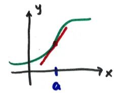
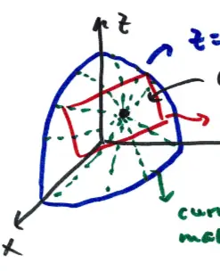

15.6 The Tangent Plane and Linear Approximation
NOT on exam 1. HW due Thu. 2/16
recall if \( y = f(x) \), we can find the linear approx. of \( f(x) \) near \( x = a \)

\[ L \approx f(x) = f(a) + f'(a)(x-a) \]
as long as \( x \) is "near" \( a \), \( L \approx f(x) \)
\( z = f(x,y) \) is a surface and at \( (x_0, y_0, z_0) \), can we find the equivalent of the tangent line approx.?
\( \rightarrow \) tangent plane

the surface is made up of infinitely curves, each having a tangent vector at \( (x_0, y_0, z_0) \)
the tangent plane contains ALL of these tangent vectors
\( \rightarrow \) find vector \( \perp \) to ALL tangent vectors